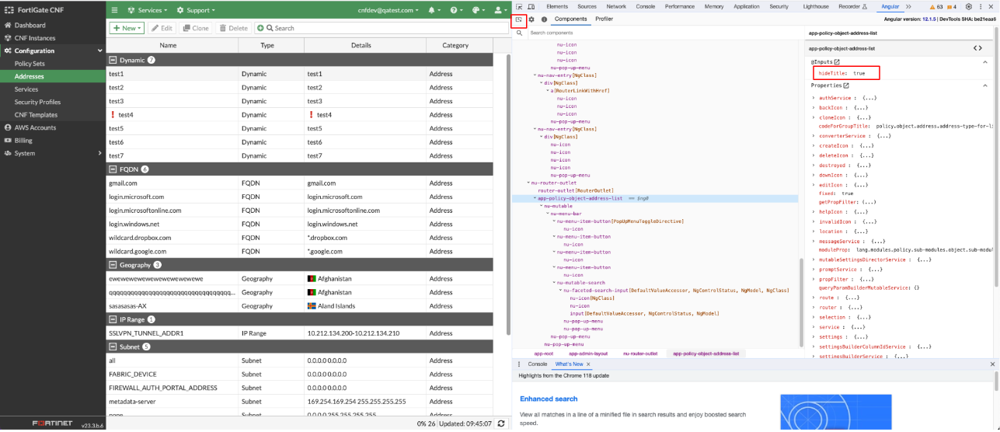
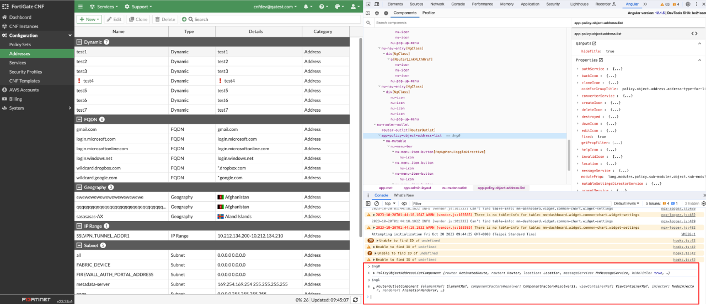
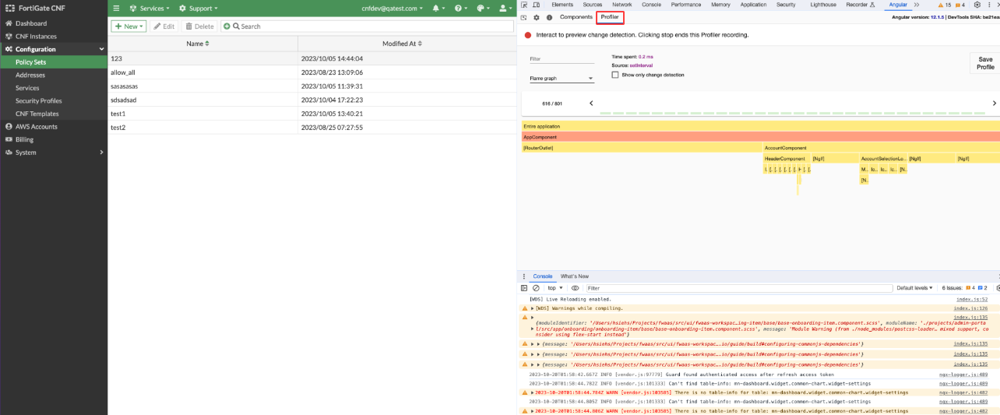

<div class="title">Description</div>
<div class="description-container">
  <div>
    There are a few enhancements of the Angular dev tools.
  </div>
  <ol>
    <li>Support offline use</li>
    <li>Support 
      <a href="https://addons.mozilla.org/en-US/firefox/addon/angular-devtools/">add-on for Mozilla</a>
    </li>
  </ol>
</div>

<div class="title">Installation</div>
<div class="content-container">
  <div>
    Install 
    <a href="https://chrome.google.com/webstore/detail/angular-devtools/ienfalfjdbdpebioblfackkekamfmbnh/related">extension for Chrome</a>.
  </div>
</div>

<div class="title">Inspectation</div>
<div class="content-container">
  <div>Open the Angular DevTools (Developer Tools -> Angular) and use the button on the left corner.</div>
</div>
<div class="demo-container">
      
</div>

<div class="title">Access the Selected Directive</div>
<div class="content-container">
  <ul>
    <li>$ng0: get a reference to the instance of the currently selected component or directive</li>
    <li>$ng1: get the previously selected instance</li>
  </ul>
</div>
<div class="demo-container">
      
</div>

<div class="title">Profiler - Understand component execution</div>
<div class="content-container">
  <div>Open the Angular DevTools (Developer Tools -> Angular) and use the button on the right corner.</div>
</div>
<div class="demo-container">
      
</div>